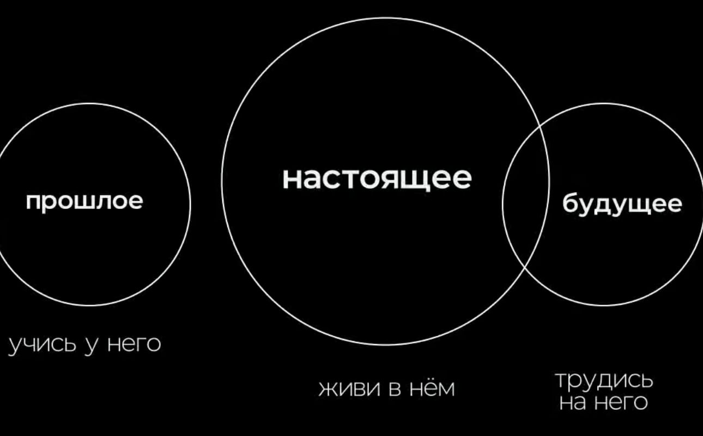
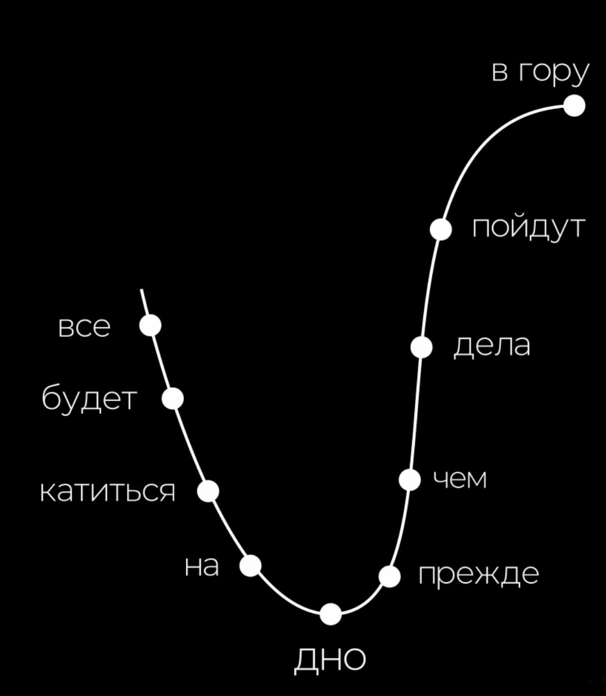
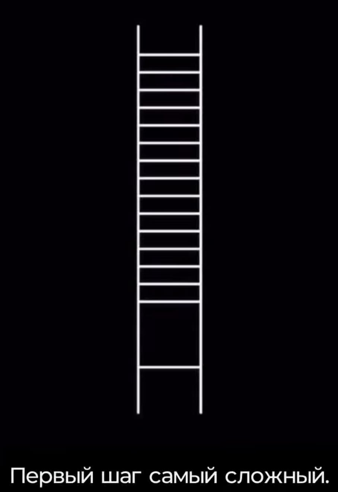
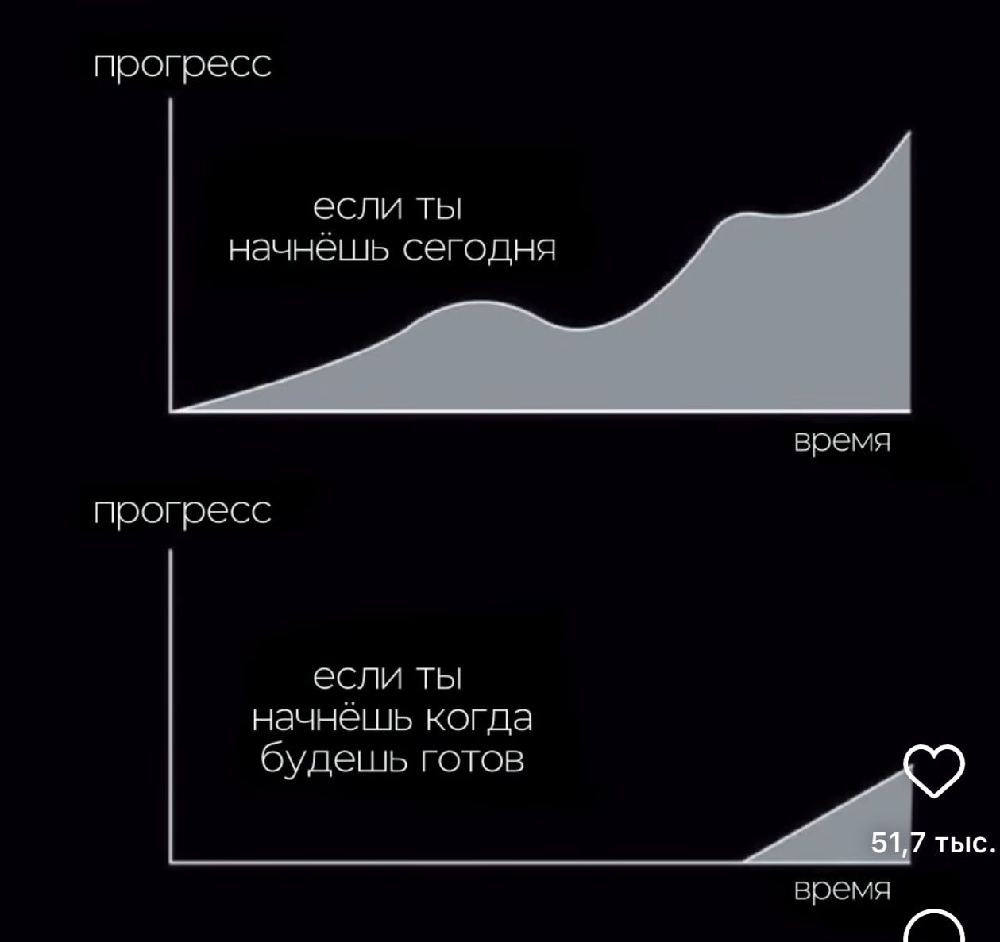
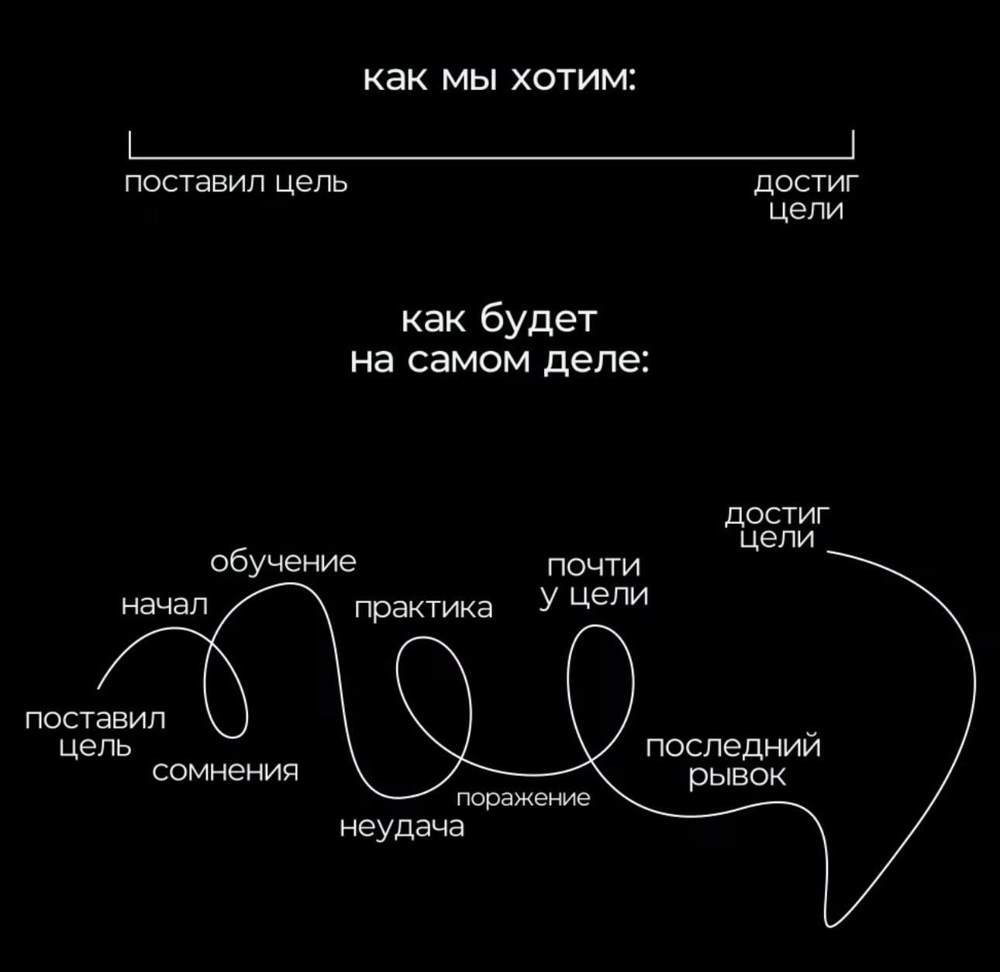
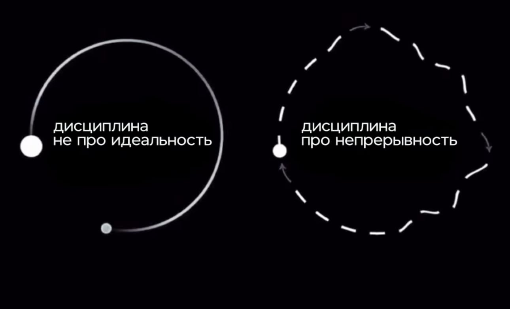
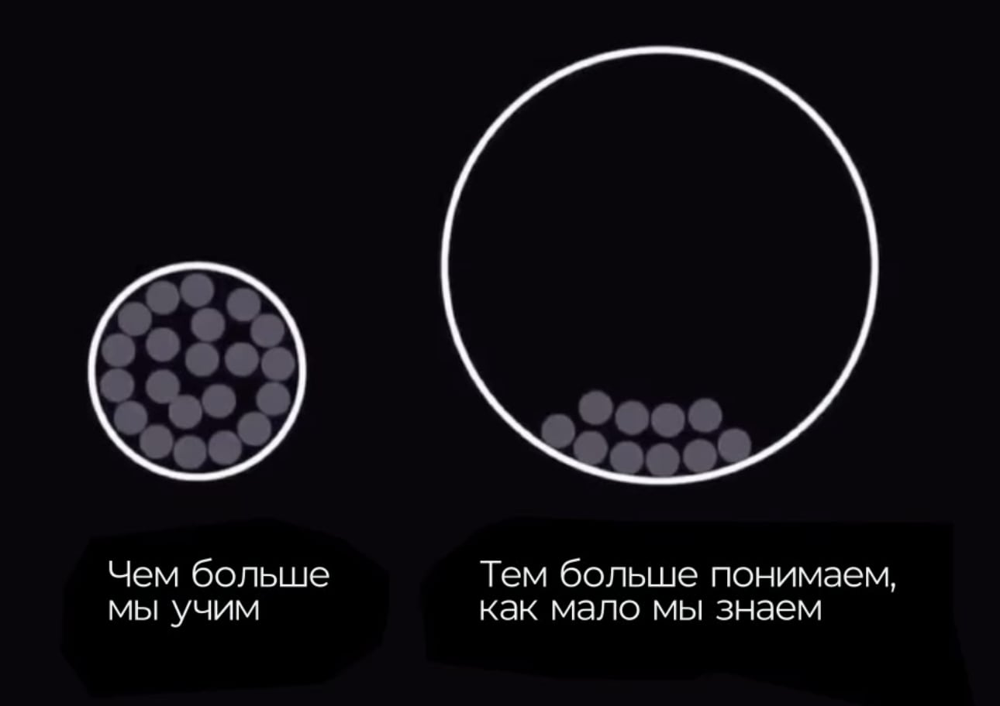
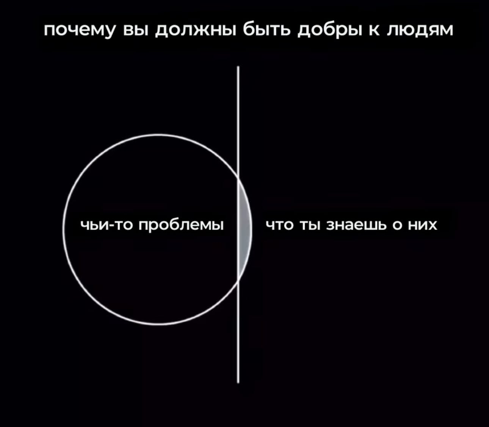
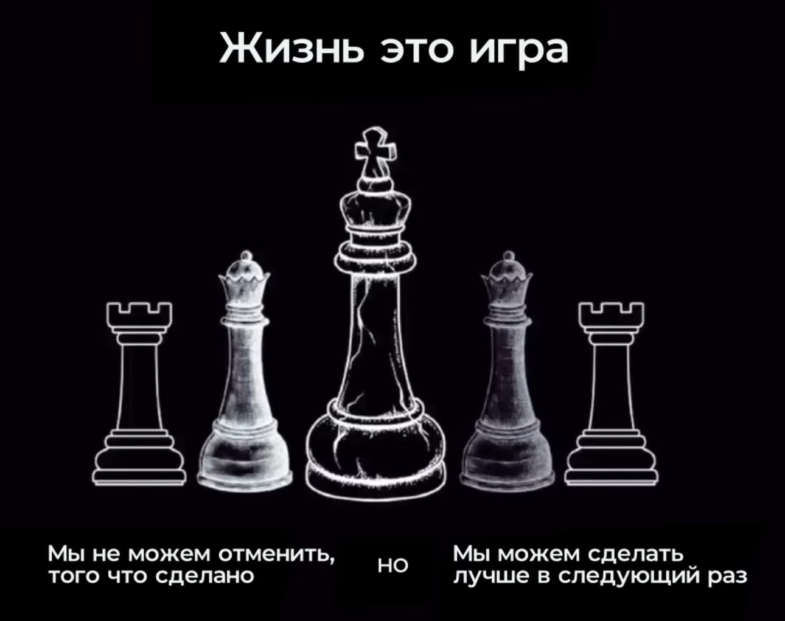
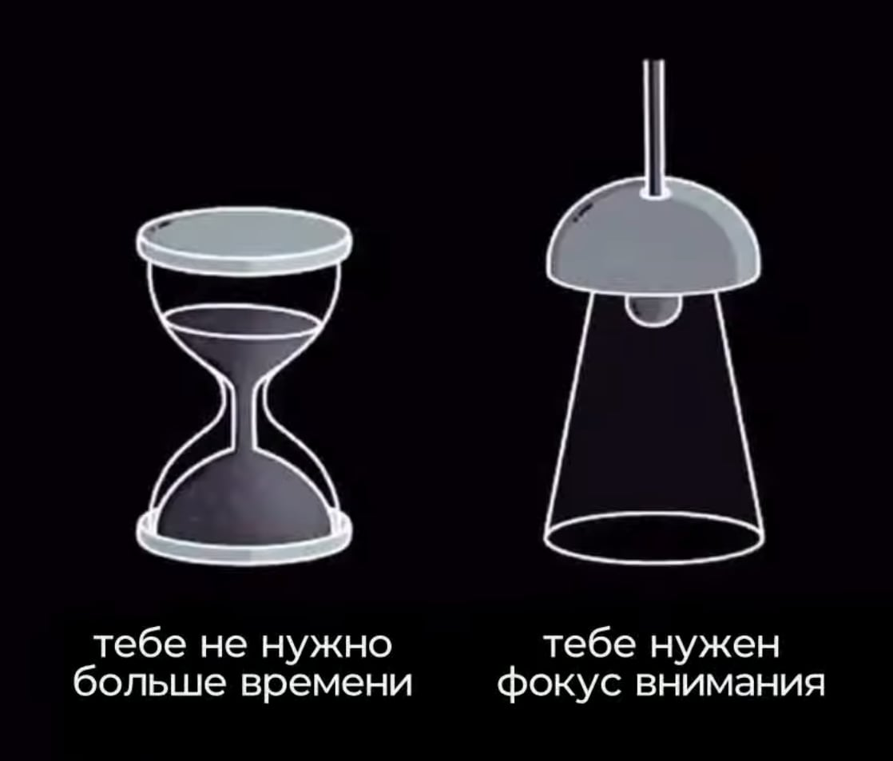

Планирование
Нужно делать ближайшее краткосрочное планирования, большие задачи разбивать на маленькие (декомпозиция), должно быть знание и понимание этих целей. Четкие конкретные понятные планы, непонятные планы не выполняются.
-
Нужно понимать ценность поставленной цели.
-
Стараться доводить дело до конца, если его уже начали.
-
Ежедневные/еженедельные чек-листы для контроля. Сравниваем свой прогресс от одной недели к другой.
-
Лучше знать мало, но знать это хорошо (узкая специализация)., чем знать много и поверхностно.
Как правильно ставить цели (SMART-планирование)
-
Specific (Конкретный) - Цель должна быть понятной, конкретной, какой будет результат (не должно быть размытостей "Нет ТЗ - Результат ХЗ")
-
Measurable (Измеримый) - Вы должны точно понимать достигли вы этой цели или нет, должно быть понимание закрытия этой задачи.
-
Achievable (Достижимый) - Цель должна быть достижимой, посильной для вас ("Бери ношу по себе, чтоб не падать при ходьбе")
-
Relevant (Значимый) - Какая для вас будет выгода от данной цели ("Стоит ли игра свеч?")
-
Time bound (Ограниченный во времени) - Вы должны примерно оценить сколько времени у вас эта цель займёт (не ставьте с�лишком долгие цели)
Инструменты
MIND-MAPS - mindmeister.com - Майндмэппинг (вход через Google)
Можно использовать для планирования, есть много шаблонов.
Time-managment
Концепция 4-x квадратов
Приоритет важным задачам, а не срочным. А интуитивно человек склонен делать срочные задачи, а не важные.
- I: Важные и срочные
- II: Важные и несрочные
- III: Неважные и срочные
- IV: Неважные и несрочные
Концепция Дэвида Аллена "Как завершать дела (Getting Things Done)"
- Дела упорядочить по приоритетам
- Незавершенные дела просто записать куда-то, чтобы на них не отвлекаться (разгрузить мозг)
- Устранять тайм-киллеры (временные ловушки)
Полезные привычки
- Физ. активность, делать зарядку поутрам каждый день
- Рано вставать, высыпаться (должна быть энергия)
- Ежедневные/еженедельные чек-листы
- Делаем дела только из списка (не переключаемся на дела, которые не по плану)
- Фокусироваться на конкретной задаче (попробовать хотя бы по правилу 15-ти минут)
- Внедрять полезные привычки постепенно (делай что-то 21 день и это станет привыч�кой)
- В конце года подводить итоги своих успехов и составлять план на новый год
- Проводить ретроспективы в конце недели для отслеживания того, что мы делали хорошо, а что плохо
- Делайте заметки, настраивайте календарь, пользуйтесь прочими инструментами, которые будут "держать вас в тонусе"
Причины прокрастинации
-
Это склонность человека к постоянному откладыванию дел на потом, даже если они важны и требуют срочного внимания.
-
Жизненные проблемы, стресс, потеря работоспособности и производительности (нет энергии), чувство вины, заниженная самооценка.
-
Зачем мне это? Неверие в успех.
-
Плохая самоорганизация и если никто не контролирует.
-
Должна быть самодисциплина (непрерывное изучение).
-
Профессиональное выгорание, чтобы его не было нужно найти какой-то противовес.
Способы преодоления прокрастинации
- ПЛАНИРОВАНИЕ
- ПРОСТЫЕ ЦЕЛИ (сделать цель менее пугающей и более достижимой)
- ИСКЛЮЧИТЬ ОТВЛЕКАЮЩИЕ ФАКТОРЫ (выключить уведомления социальных сетей, убрать телефон, убрать со стола все лишнее)
- ПРАВИЛО 15 МИНУТ (посвятить 15 минут задаче с макс. концентрацией, можно делать несколько раз за день, "Метод помидора")
- ПОСТАРАТЬСЯ ПОЛУЧИТЬ УДОВОЛЬСТВИЕ ОТ ПРОЦЕССА (найти позитивные стороны в преодолении сложной задачи)
- УВЕЛИЧИТЬ ЭНЕРГИЮ. Если нет сил на активность, то нужно понять почему их нет. Выздороветь, высыпаться, физ. активности, прогулоки на свежем воздухе, путешествий на природе, позитивные эмоции, слушать любимую музыку (нужно понять, что нам даёт энергию). Если нет сил, то результата тоже не буд�ет.
- ВЫРАБОТАТЬ ДИСЦИПЛИНУ и УМЕНИЕ СПРАВЛЯТЬСЯ С РУТИНОЙ
Time-менеджмент помогает успешнее достигать глобальных целей.
Способы преодоления проблем
- RSA-методология - Read, search, ask

Прежде чем у кого-то спрашивать о проблеме, то нужно попробовать R и S для начала. Если R и S не помогает, то при А нужно подробно описать проблему, приложить скриншоты, лучше видеозапись.
- Приём "Поговорить с уточкой" (метод утёнка) - когда вы подробно и четко формулируете и рассказываете о своей проблеме, то считайте, что она уже решена на 50%.

- Хотите в чём-то разобраться как следует - научите этому другого. Помогая другим студентам с материалом, который вы усвоили, ещё больше прокачиваете себя.
- Чёткое понимание требований к мидл-специалисту и важности в них таких «софт-скиллов», как умение работать в команде, ответственность, дисциплина. восприятие критики, умение адаптироваться и самостоятельно решать задачи.
«Как всё успеть» - советы от курса Яндекс.Практикума
Есть один важный ресурс, без которого даже самая лучшая документация с примерами не поможет закончить проект. Это время. Неважно, работаете ли вы, есть ли у вас семья или кот — без планирования времени на учёбу всегда будет не хватать. Почему? Потому что жизнь не стоит на месте, сосредоточиться сложно и вообще нужно ещё в магазин сходить (покормить рыбок, доделать рабочие задачи, поиграть — ну вы поняли). Вы, зная сколько у вас дел, открываете ТЗ проектной работы. На первый взгляд заданий очень много, времени очень мало и вот к вам уже подкрадывается прокрастинация. Хочется всё отложить. На потом, до завтра, после теории спринта и может ещё на чуть-чуть. В итоге дедлайн «ещё вчера», вы всю ночь пишете код, и учёба превращается в стресс. Чтобы избежать такого сценария, мы подготовили для вас рекомендации, которые направят вас на тернистом пути тайм-менджмента, а также практические советы по выполнению проектной работы.
Совет первый: начните
Даже пара строчек кода — это результат. Если понимаете, что сегодня совсем много дел и сделать что-то большое не успеете, подключите к проекту библиотеку или напишите небольшую функцию. Сойдёт что угодно, главное начать делать. Так вы выработаете привычку каждый день уделять время проектной работе, даже если времени не всегда много. А ещё есть шанс «войти в поток», то есть увлечься процессом. Маленькое действие может превратиться в выполненное задание.
Совет второй: осознанно выделите время
Чтобы не выгореть, установите чёткие правила, когда вы точно занимаетесь проектом. Например, «в понедельник, среду и пятницу с 20:00 до 23:00, а также в субботу с 10:00 до 16:00 я учусь». Так вы будете точно понимать, когда у вас отдых, и не будет ощущения бесконечности процесса. Чтобы этот совет работал, важно действительно соблюдать временные рамки. Организация рабочего процесса зависит в первую очередь от вас, но неожиданности тоже случаются, поэтому старайтесь не потраченное время на учёбу компенсировать в другой день. Совет третий: не пытайтесь сделать всё и сразу Вам необходимо завершить проект до конца четвёртого спринта, то есть сейчас достаточно реализовать MVP (Minimal Viable Product) вашего интерфейса. Ревьюер будет в первую очередь обращать внимание на код и реализацию логики, а не на то, есть ли у вас анимации или насколько красиво выглядят элементы на странице (это всё-таки курс не о дизайне или вёрстке). Главное, чтобы нравилось вам, а улучшать визуальную часть можно до конца первого модуля (и даже после). Когда садитесь за работу, старайтесь ставить реалистичные цели. Сделать все задания за вечер звучит не очень реалистично, а вот продумать дизайн и подготовить проект для старта работы — уже больше похоже на план.
Совет четвёртый: если сложно — спросите
У каждого разработчика бывали моменты, когда код упорно отказывался работать или сказали реализовать «фичу» при помощи нового инструмента, но ни документация, ни поисковик не помогли. В таком случае можно долго и упорно пытаться, погружаясь в дебри отчаяния, или обратиться за помощью. С одной стороны, самостоятельность помогает глубоко погрузиться в проблему, учиться за счёт проб и ошибок и развивать навык поиска решения, но просьба о помощи сэкономит время, поможет взглянуть на проблему под другим углом и порефлексировать в процессе обсуждения. Для развития навыков самостоятельность очень важна. Важнее быть не “Senior Turbo High Level Scrum React Angular Developer”, а “Problem Solver”. Но важно знать меру и не откладывать свои вопросы «на потом». Если вы попробовали разные варианты или даже просто не поняли тему, смело пишите в общий чат. Не спрашивайте сразу, но и не тяните до последнего. Будьте посередине:
- сформулируйте проблему;
- поищите и попробуйте несколько путей её решения;
- прошло 40% времени, а решение всё ещё не близко — спросите;
- «почти получилось», но времени осталось совсем мало — спросите;
- всё перепробовали, времени ещё много, но больше нет никаких вариантов — ну, вы поняли.
Не забудьте рассказать всё, что знаете о проблеме. Погружение в контекст занимает много времени, а если он есть сразу, вам помогут быстрее. Чтобы лучше сформулировать вопрос, подумайте над следующими пунктами:
- Где может быть ошибка?
- Какой цели вы хотели достичь?
- Что произошло вместо этого?
- Что вас привело к этой ошибке? Как её воспроизвести?
- Что вы уже попробовали сделать, чтобы её решить?
Вы учитесь, ваши одногруппники тоже учатся. У всех студентов разный опыт и уровень знаний, но в образовательной среде нет такого понятия, как «глупый вопрос». Все ваши вопросы важны и нужны и на каждый из них вы получите ответ. Общие чаты именно для этого.
Совет пятый: не забывайте отдыхать
Если чувствуете, что устали и проект уже совсем не радует, попробуйте переключиться на что-то другое. Не заставляйте себя сидеть над учёбой, так вы только ещё больше начнёте унывать. Попейте чаю, сходите на прогулку, посмотрите сериал — не важно. Главное — сменить деятельность и дать мозгу отдохнуть. На свежую голову всегда приходят самые крутые идеи. А если не помогло, вы всегда можете написать куратору. К вашему куратору действительно всегда можно прийти просто поболтать или рассказать о том, что вас беспокоит. Вы в этом процессе не одни и рядом всегда есть те, кто готов выслушать и помочь.
Совет шестой: планируйте и делите задачи
Что�бы вам было проще отследить путь выполнения проектной работы в этом спринте, мы подготовили для вас дорожную карту. Почти все задания в проектной работе связаны с определёнными темами, а те, что не связаны, не требуют особой подготовки. Например, сейчас вы уже можете выполнить с первого по четвёртое задание, потому что закончили тему «Собираем проект». Также вам доступно двенадцатое задание, но настраивать Netlify было бы удобнее ближе к концу, поэтому его можно отложить. Советуем сохранить эту схему и отслеживать свой прогресс. Также ниже вы можете скачать версию для печати и закрашивать сделанное.
Жизненный цикл задачи
- Оценка задачи
- Погружение в контекст
- Поиск вариантов решения
- Техническая реализация
- Тестирование
- Исправление ошибок
- Релиз
Поиск себя
-
Лучший возраст для "накопления своего багажа" 17-25 (30) лет, за это время нужно овладеть навыками, которыми человек будет пользоваться всю жизнь, если этого не сделать в этом возрасте, то дальше будет труднее в разы изучать что-то новое.
-
По сути, человек получает базу, которой будет пользоваться потом всю свою жизнь, это время очень ценно, поэтому нужно крайнее внимательно относиться к этому возрастному периоду и уже точно определится с тем, чем человек будет заниматься по жизни.
-
Детство / Юность - анализ человека на предмет деятельности
-
Молодость - развитие этих навыков
-
Зрелость - пользование навыками
-
Старость - передача навыков
Решения задач внутри существующих проектов
- Важно также прокачивать скилл адаптации к различным проектам и умение переключаться между ними.
- Лучше не пытаться познать сразу весь проект, особенно те части, которые не понимаешь.
- Нужно уметь абстрагироваться от стороннего кода или контекста, чтобы лучше сфокусироваться на текущей задаче.
- Можно делить большие проекты на "зоны ответственности", чтобы каждый разработчик занимался своей отдельной частью.
Оформление задач
- ВАЖНО: оформлять задачи в сервисах таким образом, чтобы было все максимально понятно при чтении, прикреплять скриншоты, видеоролики и прочие артефакты. Нужно все описывать "как для тупых", чтобы потом не было претензий по поводу недостаточного контекста. В идеале, все должно быть ясно и понятно без дополнительных переписок и созвонов, но для больших задач это необходимо, чтобы у разработчика было �точное понимание всех процессов. Цель оформления задачи - это понимамие этой задачи исполнителем, как будет оформлена задача, такой будет и результат. Нет ТЗ - результат ХЗ.
Картинки для мотивации









